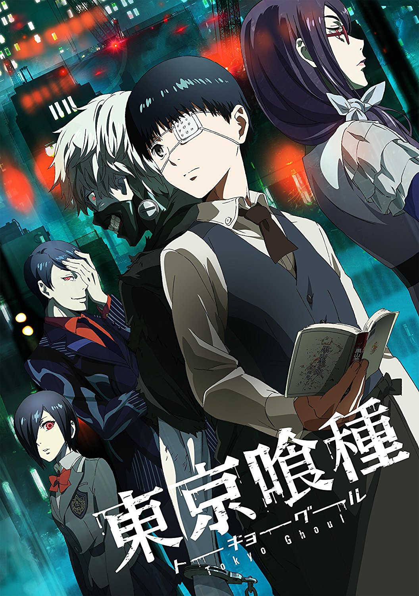

도쿄구울은 우연한 계기로 구울의 신체를 이식받아 인간을 잡아먹는 존재 '구울'로 변해버린 문학을 좋아하던 소심한 대학생 카네키켄을 중심으로 벌어지는 이야기이다.
등장인물 1. 구울 1.1. 안테이크 1.2. 아오기리 나무 1.3. 카네키 팀 1.4. 피에로 마스크 1.5. :re 1.6. 츠키야마 재벌 1.7. V조직 1.8. 와슈의 왕 세력 1.9. 검은 산양 1.10. 그 외 2. CCG 3. 민간인 4. 외전 4.1. JaCk 4.1.1. 구울 4.1.2. 수사관 4.1.3. 민간인 4.2. Pinto 4.2.1. 구울 4.2.2. 민간인 4.3. Joker 4.3.1. 수사관 4.3.2. 구울 5. 게임 : Jail